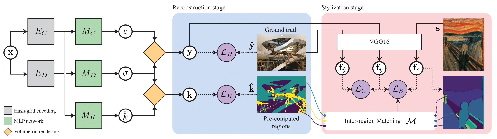
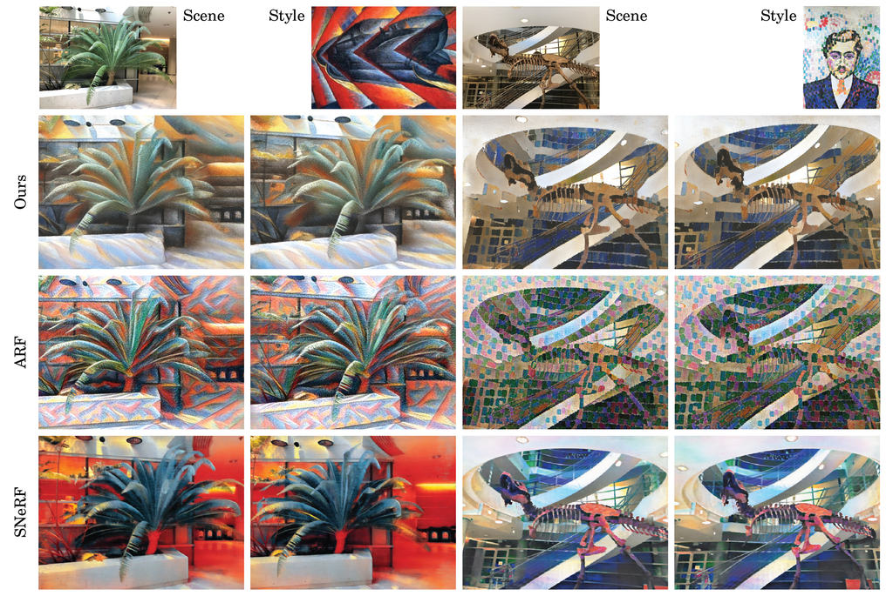

1Hong Kong University of Science and Technology
2VinAI
International Conference on Computer Vision (ICCV), 2023


Abstract
In recent years, there has been increasing interest in applying stylization
on 3D scenes from a reference style image, in particular onto neural radiance
fields (NeRF). While performing stylization directly on NeRF guarantees
appearance consistency over arbitrary novel views, it is a challenging problem
to guide the transfer of patterns from the style image onto different parts of
the NeRF scene. In this work, we propose a stylization framework for NeRF based
on local style transfer. In particular, we use a hash-grid encoding to learn the
embedding of the appearance and geometry components, and show that the mapping
defined by the hash table allows us to control the stylization to a certain
extent. Stylization is then achieved by optimizing the appearance branch while
keeping the geometry branch fixed. To support local style transfer, we propose a
new loss function that utilizes a segmentation network and bipartite matching to
establish region correspondences between the style image and the content images
obtained from volume rendering. Our experiments show that our method yields
plausible stylization results with novel view synthesis while having flexible
controllability via manipulating and customizing the region correspondences.
@inproceedings{pang-nerfstyle-iccv23,
title = {Locally Stylized Neural Radiance Fields},
author = {Hong-Wing Pang and Binh-Son Hua and Sai-Kit Yeung},
booktitle = {International Conference on Computer Vision (ICCV)},
year = {2023}
}
Acknowledgements
This paper was partially supported by an internal grant from HKUST (R9429) and the HKUST-WeBank Joint Lab.